Improved Methods for Particle Tracking in CAD-Based Monte Carlo Radiation Transport
University of Wisconsin-Madison
Patrick C. Shriwise
empty text
https://beta.etherpad.org/p/shriwise_prelim_2016Contents
| Motivation | 1 |
| Background | 2 |
| Feature-Adaptive BVH Construction | 3 |
| Enhanced SIMD BVH Traversals for Radiation Transport | 4 |
| Signed Distance Field Preconditioner | 5 |
| Summary | 6 |
Motivation
Motivation
CAD-Based Monte Carlo Radiation Transport (MCRT)
- equal freedom in design and analysis
- engineering analysis on the same model
MC Geometry Representations
| Native Geometry | CAD Geometry |
|---|---|
|
|
CAD-Based MCRT
- A pathway for robust particle transport on CAD geometries exists.
- Direct Accelerated Geometry Monte Carlo (DAGMC[10])
- Relies heavily on Mesh-Oriented DataBase (MOAB[9])
- This toolkit is not yet at its full potential.
- Difficult to meet CAD quality required for robustness in DAGMC
- Long simulation times (2.5-10x longer than native codes) resulting in hours or even days of additional simulation runtime
Research Goal
To provide CAD-based radiation transport performance comparable to native Monte Carlo geometry representations
| FNG | ATR | UWNR |
 |
 |
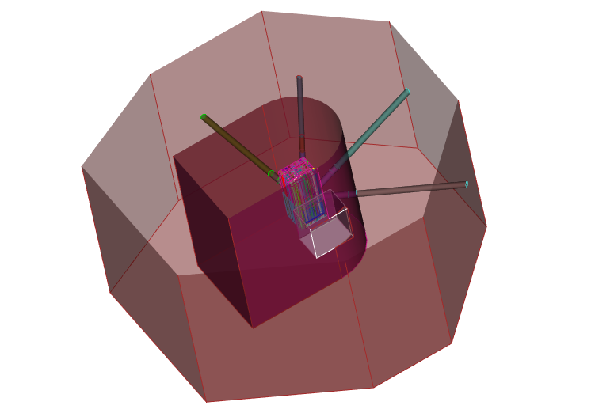 |
| neutron source | criticality | criticality |
These problems were run with both native & CAD geometries.
Research Goal
To provide CAD-based radiation transport performance competitive with native Monte Carlo geometry representationsMotivation Recap
- Allows for better geometric fidelity
- Requires less human time in model generation
- Performance comparable to native geometry makes this more realistic/deisrable for a more broad range of problems.
- Current problems requiring CAD-based MCRT will benefit from enhanced performance.
- New methods may be necessary for reasonable runtimes with charged particle transport.
CAD-Based MCRT:
Benefits of this work:
Background
DAGMC Geometry Workflow
| surface faceting | particle tracking | MCNP5[12] | ||||
CAD (Cubit/Trelis) |
→ | preprocessing (MOAB) |
→ | DAGMC (MOAB) |
→ ← |
Monte Carlo |
| geometric design | make_watertight [8] | ray tracing | physics | |||
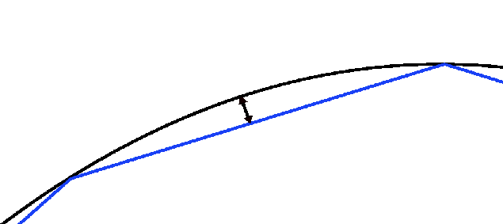

|
Analysis |
|||||
MC Geometry Queries
| particle tracking | MCNP5[12] | |
| DAGMC (MOAB) |
→ ← |
Monte Carlo |
| ray tracing | physics |
3 types of queries:
Surface Faceting
Faceting Tolerance: maximum allowed diatance of farthest point on the facet from the analytic surface.
- Discretization reduces all surfaces to planar type regardless of analytic surface complexity.
- There are also now many, many more of them.
| FNG | ATR | UWNR | ITER SDDR | |
| Surfaces | $1 \times 10^3$ | $2.8 \times 10^3$ | $5.5 \times 10^3$ | $6.9 \times 10^3$ |
| Triangles | $1.2 \times 10^6$ | $4.9 \times 10^6$ | $3.3 \times 10^6$ | $4.4 \times 10^7$ |
A linear search of triangles is unreasonable.
Ray Tracing Acceleration Data Structures
This is a field dedicated to rapid geometric queries on surface meshses of triangles.
It commonly employs a variety of hierarchical data structures:
- Bounding Volume Hierarchy (BVH)
- KDTree
- Octree
- ...
Bounding Volume Hierarchy
| 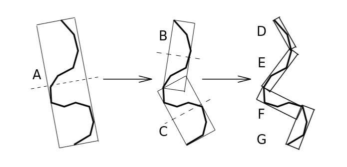 | 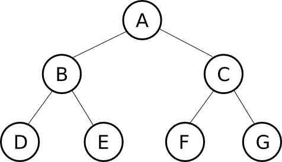 |
Bounding Boxes
| Axis-Aligned Boxes | Oriented Boxes | |
|
|
High Valence Mesh Features
High Valence Mesh Features
- Common feature of many faceting algorithms
- Result of trying to minimize triangles used to represent a surface
- Known to be detrimental to DAGMC performance
High Valence In Production Models

 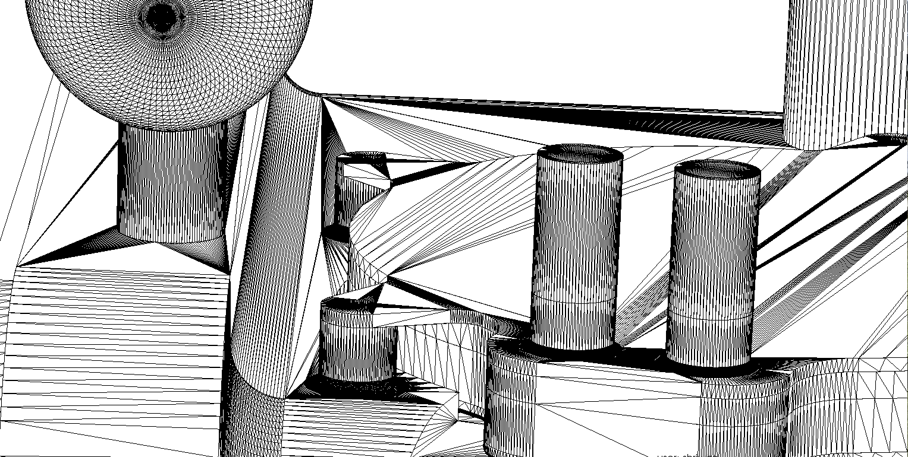
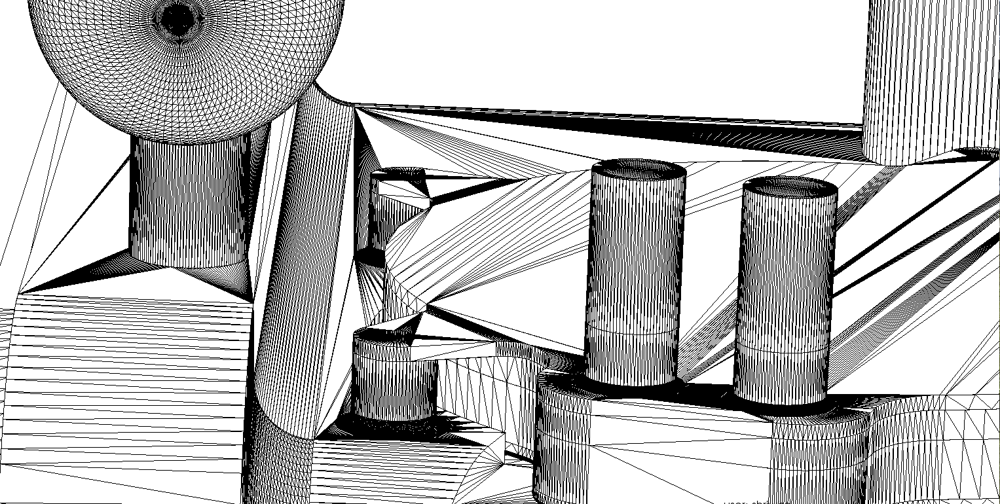
Altered Faceting
Length Tolerance: maximum allowed length of facet edge.
| Faceting Tolerance Only | With Length Tolerance |
| 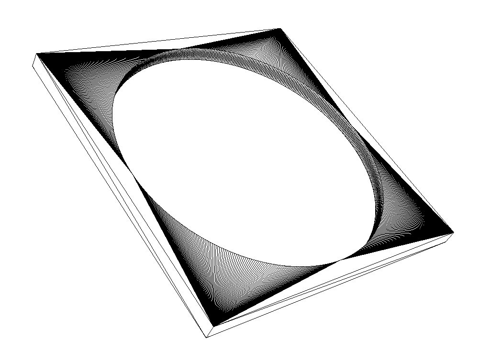 | 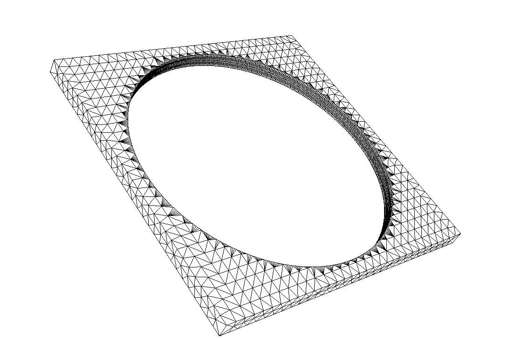 |
High Valence Test Model
Created by manually faceting a cube surface.
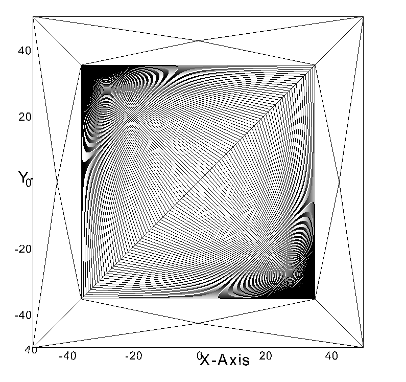Variable parameters:
- fraction of surface that high valence region occupies
- valence of corner vertices
High Valence Study
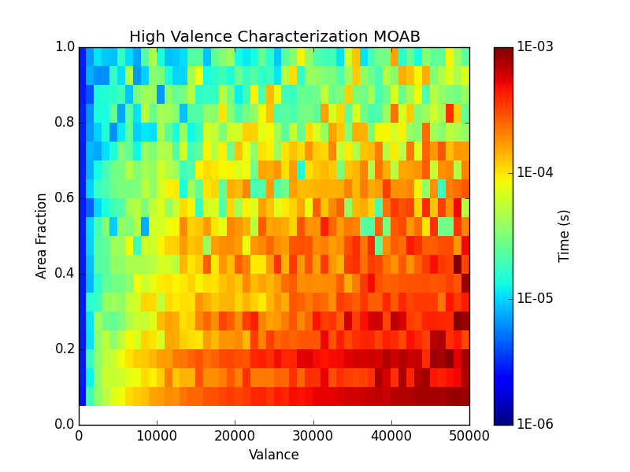High Valence OBB Investigation
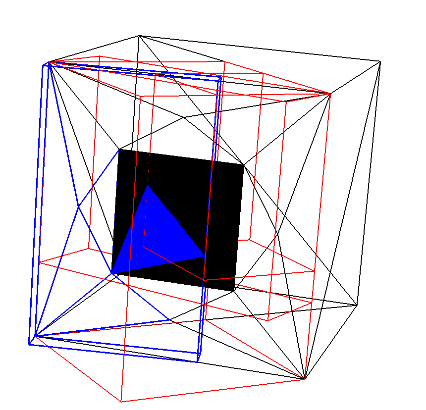Median Splitting Algorithm
Controllable Parameters
| Parameter | Default Value |
| Max Num. Leaf Entities | 8 |
| Max Tree Depth | 0 |
| Worst Split Ratio | 0.95 |
| Best Split Ratio | 0.0 |
$$ splitting\;ratio = \dfrac{|left\; child\; primitives\; -\; right\; child\; primitives|}{parent\; entities} $$
Solution: Set the worst splitting ratio to 1 to force continued build of leaf nodes.
New HV Study Results
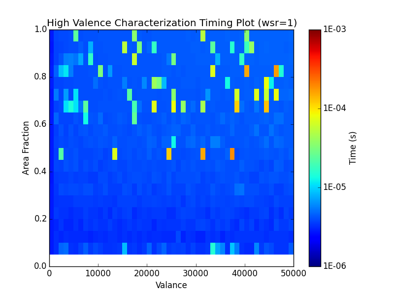Performance is maintained without need for altered faceting.
Surface Area Heuristic
The Surface Area Heuristic (SAH) improves BVH traversal performance by 30% on average.[5]
$C_{s} = C_{t} + \frac{A_{l}}{A_{p}} |P_{l}|C_{i} + \frac{A_{r}}{A_{p}} |P_{r}|C_{i}$ [1]
| $$C_{s}$$ | - estimated cost of split |
| $$C_{t}$$ | - cost of traversal to child nodes |
| $$A_{l} $$ | - surface area of left child |
| $$A_{p} $$ | - surface area of parent bounding volume |
| $$P_{l} $$ | - primitives contained by the left child |
| $$C_{i} $$ | - cost of primitive intersection check |
| $$A_{r} $$ | - surface area of right child |
| $$P_{r} $$ | - primitives contained by the right child |
SAH Applied to High Valence
This same test was performed using the Embree ray tracing kernel. [11]

Feature-Adaptive BVH Construction
Feature-Adaptive BVH Construction
This process is likely of more interest to radiation transport than rendering.
| Rendering | $ (\sim 8 \frac{rays}{px})(1024 \times 1080\, px) $ = $1.7 \times 10^7 $ primary rays |
| Radiation Transport | $ 10^9 $ histories $ $ = $ 10^9 $ primary rays |
There is at least an additional order-of-magnitude in secondary rays for radiation transport.
- Higher collision density
- Secondary particle generation
- Variance reduction
General Ray Tracing Cost Analysis
|
$ tts $ - time to solution $ C $ - cost of other operations $ T_{B} $ - acceleration data structure build time $ T_{T} $ - average traversal time $ N_{r} $ - ray queries required for solution $ q $ - acceleration data structure quality |
$$ tts = C + T_{B} + \sum_{}^{N_{r}} T_{T} $$ $$ tts =\, C + T_{B} + \sum_{}^{N_{r}} T_{T}(q,\ldots) $$ $$ q(T_{B}) \rightarrow T_{T}(T_{B}) \rightarrow T_{T} \propto \frac{1}{{T_{B}}^{x}} \,\, (\, x \geq 0) $$ $$ tts =\, C + T_{B} + \sum_{}^{N_{r}} T_{T}(T_{B},\ldots) $$ |
Proposed Building Scheme
|
Construct BVH
|
→ |
Resolve Tagged Leaves
Step 1:
Step 2:
|
Feature-Adaptive BVH Contributions
- Adaptive building addresses common mesh feature which is difficult for generalized heuristics to cope with and is deterimental to performance.
- BVH heuristic adaptation maintains expected O(logN) performance without the need for additional triangles or mesh alteration.
$tts$ $ =\, C +$ $T_{B}$ $ + $ $\sum_{}^{N_{r}} T_{T}$ $($ $T_{B}$ $,\ldots) $
EmDAG
Architecture Based Acceleration
- Embree was not selected only for its use of the SAH.
- It employs Single Instruction Multiple Data (SIMD) commands, performing multiple ray-box and ray-triangle intersection checks at once in single-precision.
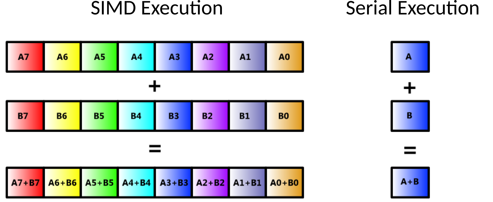
Some History
Two approaches to using SIMD in ray tracing:
- N:1 - test many rays against a single box at once
- 1:N - test one ray against many boxes at once
Performance of selsected method selection will depend on ray coherence.

| coherent | incoherent |
* image courtesy of Intel
Quasi-Monte Carlo Ray Tracing
photo-realism (rendering based on realistic photon physics)
| N:1 | 1:N | |
| (ray packets) | (single-ray SIMD traversal) | |
| ray coherence | → | ray incoherence |
| visualization | → | physical rendering/simulation |
| MCRT |
SIMD BVH Topology
In order to take advantage of SIMD register widths BVH topologies are altered.
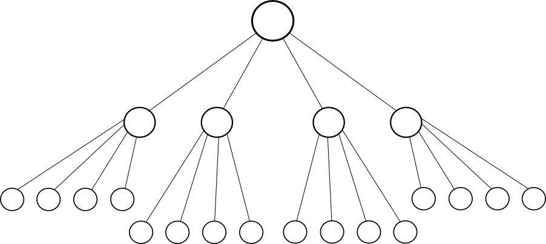This is accomplished by collapsing a binary tree into an n-ary tree.
Integrating Embree with DAGMC
(EmDAG)

Ray Fire Testing Zoo
| 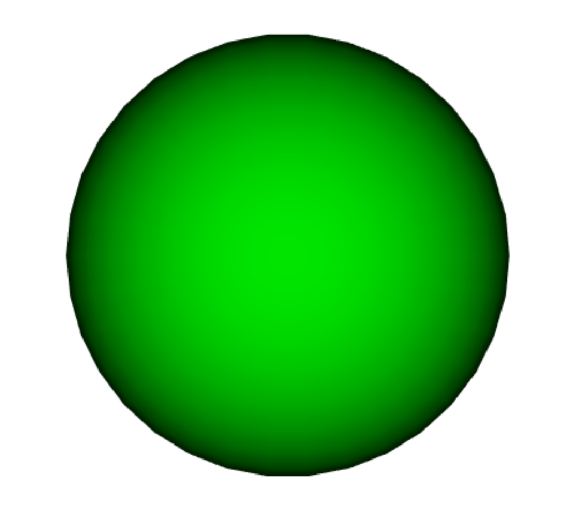 |
Performance Comparison
| DAGMC (MOAB) | EmDAG (Embree) |
Transport Testing
EmDAG was applied to a few simple models:
- 5 MeV isotropic neutron point source at model origin
- All volumes are water-filled (ρ = 1 g/cc)
- Faceting tolerance: $10^{-4}$cm
- 1M histories
|
Single Sphere |
Nested Spheres 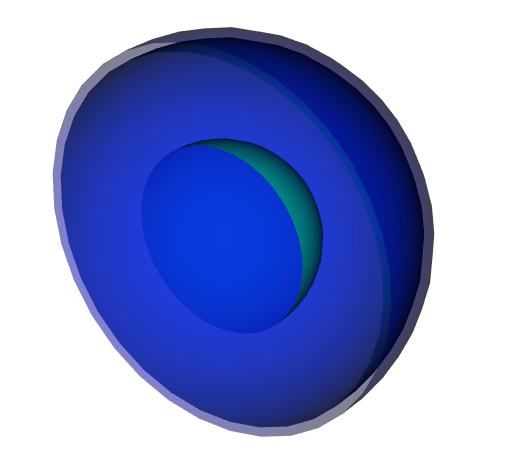 |
Cube 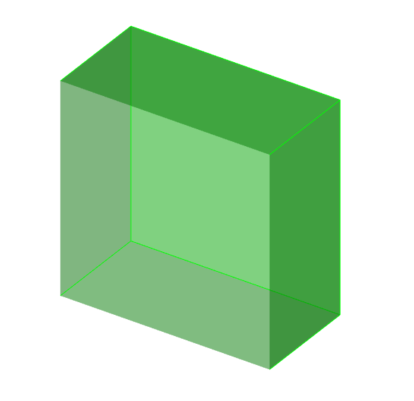 |
Nested Cubes 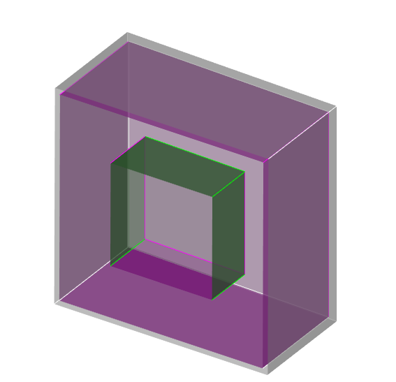 |
Flux and energy tallies were applied in all cells.
Transport Performance
Sphere Models
Transport Performance
Cube Models
FNG Transport Test
- The original source was replaced with 14.1 MeV neutron isotropic volume source.
- 100M histories
- Facet tolerance: 1e-04cm
- Length tolerance: 5cm
A flux mesh tally was applied over the entire problem.
FNG Faceting
| Faceting Tolerance Only | With Length Tolerance |
FNG Transport Results
15% improvement in EmDAG performance with length tolerance applied
EmDAG Limitations
| Tolerance(s) | Lost Particles |
| Faceting Tolerance | 255 |
| Faceting & Length Tolerance | 247 |
Cause: Conversions from single to double precision and vice versa.
Enhanced SIMD BVH Traversal for MCRT
Enhanced SIMD BVH Traversal for MCRT
Embree does not meet the requirments of the robust tracking algorithm used by DAGMC as it currently exists.
- Single to double precision conversion decouples logical and numerical position of particles.
- Embree has no known capability for deeper mesh interrogation for enhanced logical tracking.
- No closest to location capability is implemented.
Kernel Comparison
| MOAB | EmDAG |
|
Pros:
Cons:
|
Pros:
Cons:
|
Higher Precision SIMD Kernel
- The natural inclination might be to make Embree double precision
- This is doubly disadvantageous:
- slower double precision calculations
- increased box memory means fewer entities can fit in lower level caches
Mixed-precision concept
Proposed Design of SIMD BVH for MCRT
|
MOAB
|
→ |
RT Kernel
|
| ↖ |
DAGMC
|
↗ |
Enhanced SIMD BVH for MCRT Contributions
- SIMD BVH oriented closest to location algorithm
- Single-precision allows much of Embree's speed to be retained as majority of time is spent in BVH traversal.[3]
- Takes advantage of MOAB's direct access methods to provide a spatial hierarchy traversal suitable for engineering analysis purposes with comparable performance to that of analytic geometry methods such as CSG on common CPU architectures.
Implicit Surfaces and Signed Distance Fields
Implicit Surfaces
(Level-Set Methods)
An implicit surface is a multivariate function defined over an $ R^3 $ domain
$$ \Omega(R^3)\rightarrow R $$where points on the surface are represented by the isocontour $v=0$.[6]
$$ \Omega(\vec{x}) - v = 0 $$Important geometric properties can be easily recovered from this represntation.
|
Surface Normal $$<\Omega_{x}(\vec{x}),\Omega_{y}(\vec{y}),\Omega_{z}(\vec{z})>$$ |
Distance to Nearest Intersection $$ |\Omega(\vec{x})| $$ |
Interior vs. Exterior Locations $$ sign(\Omega(\vec{x}))$$ |
Implicit Surfaces
Implicit surface uses:
- modeling (CSG), simulation, triangulation
- rendering of dynamic surfaces like smoke or fire ($\Omega(\vec{x},t)$) [4]
Ray Marching:
Signed Distance Fields
- $ d(\vec{x}) = 0 $ for all $\vec{x}$ on the surface boundary
- $ d(\vec{x}) > 0 $ for all $\vec{x}$ inside the surface boundary
- $ d(\vec{x}) < 0 $ for all $\vec{x}$ outside the surface boundary
$ d(\vec{x}) = sign(\Omega(\vec{x}))|\Omega(\vec{x})| $
Particle Tracking Preconditioner
Concept: Use interpolated signed distance values to rule out surface crossing between current position and next event location.
- avoids O(log(N)) in favor of O(1) process
- best for particles traveling far from surfaces
Particle Tracking Preconditioner
- Signed Distance Values (SDVs) can be used to precondition closest to location calls or determine point containment in O(1) complexity as well.
Simple condition for these operations:
$ |SDV| > \epsilon $
Interpolation Error Estimate
(a 2D Linear example)
$$ \epsilon = \frac{1}{2} \Delta x (h-\Delta x) \frac{\partial^2 u}{\partial x^2} + \frac{1}{2} \Delta y (h-\Delta y) \frac{\partial^2 u}{\partial y^2} $$
| $$ \epsilon $$ | - interpolation error |
| $$ \Delta x $$ | - x distance to interpolation point from data point |
| $$ h $$ | - mesh interval size |
| $$ u(x,y) $$ | - sampled function on mesh |
| $$ \Delta y $$ | - y distance to interpolation point from data point |
curvature terms are problematic
Initial Implementation
- uses MOAB's structured mesh interface
- populated using MOAB's ray tracing interface (closest to location)
- disambiguates distance value signs using DAGMC's point containment algorithm
Preconditioner Test
|
|
Flux and energy cell tallies were applied.
Initial Results
Initial Results
Initial Results
$$ u = \frac{dagmc\, rays - dagmc\, w/\, precond.\, rays}{dagmc\, rays}$$
Charged Particle Transport
- Particles take many small steps in space to approximate their straggling paths.
- Each step requires a geometry check for surface crossing.
A sample problem of electron transport from MCNP6 tests:
- Flouresence test of 1 keV - 100 keV photons on Fe/W target
- 5,000 histories
- single-event electron physics
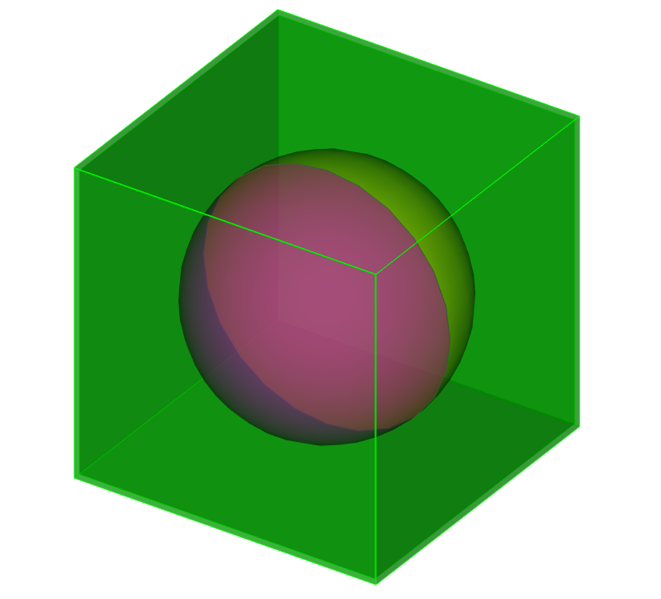
Initial Results
| MCNP6[2] | DAG-MCNP6 w/ Precond. | DAG-MCNP6 | |
| Run Time (min) | 0.16 | 0.46 | 1413.94 |
Signed Distance Field Preconditioner
Signed Distance Field Preconditioner
- The SDF preconditioner has already been shown to be a powerful acceleration tool given the proper conditions.
- The identification of proper conditions for this data structure is important.
- Memory usage is a concern:
- Adaptive mesh refinement or octree may be useful.
- Error estimation becomes more difficult with non-uniform techniques.
- Other global uniform mesh methods will be explored.[7]
Signed Distance Field Preconditioner Contributions
- Population of signed distance field with ray tracing kernel rather than generating an implicit surface representation for static mesh application.
- When applied in a robust manner, this method can decrease lost particle rate in unsealed models.
- Coupling of the signed distance field to the BVH may provide insight for further accelerations.
- When well utilized, this data structure can bring particle tracking closer to an O(1) process than the O(logN) process relied upon in the past.
$$ u\, O(1) + (1-u)\,O(logN) $$
Summary
Feature-Adaptive BVH Contributions
- Adaptive building addresses common mesh feature which is difficult for generalized heuristics to cope with and is deterimental to performance.
- BVH heuristic adaptation maintains expected O(logN) performance without the need for additional triangles or mesh alteration.
$tts$ $ =\, C +$ $T_{B}$ $ + $ $\sum_{}^{N_{r}} T_{T}$ $($ $T_{B}$ $,\ldots) $
Feature-Adaptive BVH Objectives
- Implement feature-adaptive BVH builder in MOAB as proposed
- Establish conditions for leaf nodes expected to have a significant impact on performance
- Characterize and address any other detrimental mesh features discovered along the way
- These additional mesh features may only be elucidated by a higher-performance system.
- Demonstrate effecitveness for transport on HV test model and other production models known to contain HV featires.
Enhanced SIMD BVH for MCRT Contributions
- SIMD BVH oriented closest to location algorithm
- Single-precision allows much of Embree's speed to be retained as majority of time is spent in BVH traversal.[3]
- Takes advantage of MOAB's direct access methods to provide a spatial hierarchy traversal suitable for engineering analysis purposes with comparable performance to that of analytic geometry methods such as CSG on common CPU architectures.
- Allows DAGMC's robust particle tracking to be coupled to a high-performance ray tracing kernel for improved CAD-Based radiation transport performance.
Enhanced SIMD BVH for MCRT Objectives
- Implement a SIMD-oriented BVH builder in MOAB which generates memory contiguous single-precision bounding boxes around double-precision primitives (triangles).
- Develop or extend a ray tracing kernel which is capable of SIMD traversal on the MOAB-provided BVH and associated double-precision triangles.
- Kernel should have no more lost particles than would be seen in the current version of DAGMC for the same triangle mesh.
- Kernel should provide comparable performance to the EmDAG system.
- Compare performance and robustness to EmDAG system for simple transport problems
- Demonstrate effectiveness for production models as well
Signed Distance Field Preconditioner Contributions
- Population of signed distance field with ray tracing kernel rather than generating an implicit surface representation for static mesh application.
- When applied in a robust manner, this method can decrease lost particle rate in unsealed models.
- When well utilized, this data structure can bring particle tracking closer to an O(1) process than the O(logN) process relied upon in the past.
$$ u\, O(1) + (1-u)\,O(logN) $$
Signed Distance Field Preconditioner Objectives
- Create a predictive model for preconditioner utilization, $u$, based on three problem-specific factors:
- $\lambda$ - average mean free path
- $v$ - characteristic volume size
- $h$ - preconditioner mesh step size
- Explore global uniform mesh preconditioner solutions for production DAGMC models.
- Demonstrate effectiveness of the utilization model and resulting data structure in toy and production models for neutron, photon, and charged particle transport.
$$ u(\lambda,v,h) $$
Preliminary Timeline
Feature-Adaptive BVH Construction: 1-2 months
Enhanced SIMD BVH for MCRT: 6-8 months
Signed Distance Field Preconditioner: 4-6 months
Complementary Effects
- A SIMD-based closest to location algorithm
- A SIMD-based closest to location algorithm may allow us to avoid other, more costly methods of populating the SDF data structure.
- Coupling of the signed distance field to the BVH may provide insight for further accelerations.
- Feature-adaptive BVH construction will improve performance of both signed distance field population and transport queries during simulation.
The combined effect provides a more efficient pathway for CAD-Based Monte Carlo Radiation Transport analysis.
Acknowledgements
I would like to thank all members of the Computational Nuclear Engineering Reserach Group here at UW and in particular:
- Dr. Paul Wilson
- Dr. Andrew Davis
- Lucas Jacobson
And to the Nuclear Regulatory Comission for funding this work.

References
[1] Glassner, Andrew S., ed. 1989. An Introduction to Ray Tracing. London, UK, UK: Academic Press Ltd.
[2] Goorley, T., M. James, T. Booth, F. Brown, J. Bull, L.J. Cox, J. Durkee, et al. 2016. “Features of {MCNP6}.” Annals of Nuclear Energy 87, Part 2: 772–83. doi:http://dx.doi.org/10.1016/j.anucene.2015.02.020.
[3]Baboulin, Marc, Alfredo Buttari, Jack Dongarra, Jakub Kurzak, Julie Langou, Julien Langou, Piotr Luszczek, and Stanimire Tomov. 2009. “Accelerating Scientific Computations with Mixed Precision Algorithms.” Computer Physics Communications 180 (12): 2526–33. doi:http://dx.doi.org/10.1016/j.cpc.2008.11.005.
[4]Knoll, Aaron. 2008. “A Survey of Implicit Surface Rendering Methods, and a Proposal for a Common Sampling Framework.” Lecture Notes in Informatics (LNI), Proceedings - Series of the Gesellschaft Fur Informatik (GI), 164–77.
[5] MacDonald, Kellogg S., J. David ; Booth. 1990. “Heuristics for Ray Tracing Using Space Subdivision.” The Visual Computer 6 (3): 153–66. doi:10.1007/BF01911006.
[6]Osher, Stanley, and Ronald P. Fedkiw. 2003. Level Set Methods and Dynamic Implicit Surfaces. Applied Mathematical Science. New York, N.Y.: Springer. http://opac.inria.fr/record=b1099358.
[7] Setaluri, Rajsekhar, Mridul Aanjaneya, Sean Bauer, and Eftychios Sifakis. 2014. “SPGrid: A Sparse Paged Grid Structure Applied to Adaptive Smoke Simulation.” ACM Trans. Graph. 33 (6). New York, NY, USA: ACM: 205:1–205:12. doi:10.1145/2661229.2661269.
[8]Smith, B.M., T.J. Tautges, and P.P.H. Wilson. 2010. “Sealing Faceted Surfaces to Achieve Watertight CAD Models.” In. Chattanooga, TN, United States.
[9] Tautges, T. J., R. Meyers, K. Merkley, C. Stimpson, and C. Ernst. 2004. MOAB: A Mesh-Oriented Database. SAND2004-1592. Sandia National Laboratories.
References
[10] Tautges, Timothy J., P. P. H. Wilson, Jason Kraftcheck, Brandon M. Smith, and Douglass L. Henderson. 2009. “Acceleration Techniques for Direct Use of CAD-Based Geometries in Monte Carlo Radiation Transport.” In International Conference on Mathematics, Computational Methods & Reactor Physics (M&C 2009). Saratoga Springs, NY: American Nuclear Society.
[11] Wald, Ingo, Sven Woop, Carsten Benthin, Gregory S. Johnson, and Manfred Ernst. 2014. “Embree: A Kernel Framework for Efficient CPU Ray Tracing.” ACM Trans. Graph. 33 (4). New York, NY, USA: ACM: 143:1–:8. doi:10.1145/2601097.2601199.
[12] X-5 Monte Carlo Team. 2004. MCNP - a General Monte Carlo N-Particle Transport Code, Version 5 - Volume III: Developers Guide. LA-CP-03-0284. Los Alamos National Laboratory.